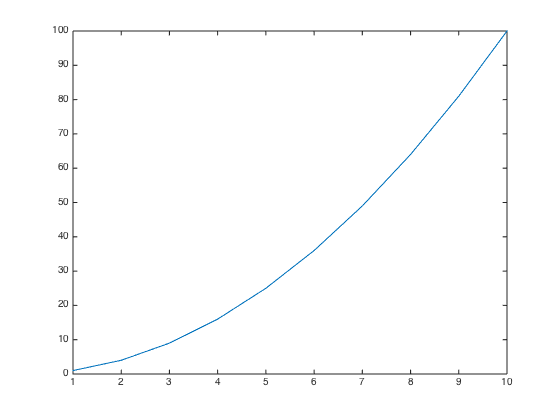
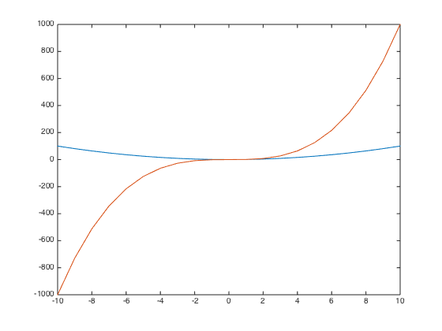

Introduction Matlab
This is a brief introduction to variable and matrix creation, indexing, functions, comments, size function, counting, for and while loops, the if statement, as well as the plot function.
Contents
Variables and matrices
Variables are placeholders for data. Variables can store a variety of data types, including numerical and string[1].
varA=4; %Creating var varB=15; varA*varB myName='Marx' myAge=34
ans =
60
myName =
Marx
myAge =
34
When you want to display a result in the command window just leave without semicolon ";" the en of the line. Variable names cannot have spaces or other special characters such as $,%,^ and so on. They may contain numbers but may not start with numbers. Numbers can help create useful variable names, such as frequency2plot or data4analysis.
In addition to storing individual items, variables can store collections of items, such as vectors and matrices. This is where Matlab name comes from "Matrix Laboratory."
A=[1 2 3 4 5 6 7 8 9] B=[1 2 3; 4 5 6; 7 8 9]
A =
1 2 3 4 5 6 7 8 9
B =
1 2 3
4 5 6
7 8 9
Functions
Functions are encapsulated sections of code that perform some operation on input data.
Functions are designed to make programming easier. For example, to compute the average of a set of numbers, the function mean( ) can be used.
meanA=mean(A) %mean function newData=zeros(3,3) %zeros function
meanA =
5
newData =
0 0 0
0 0 0
0 0 0
Comments
Comments are pieces of text that are not evaluated by Matlab. They are important because they allow you to keep track of the purpose of lines of code, to remember what variables mean or what data they store, and to leave notes so other people can interpret and work with your code.
In Matlab, comments are indicated with percent % signs.
Indexing vectors
A=[1 2 3 4 5 6 7 8 9]; B=[1 2 3; 4 5 6; 7 8 9]; A(4) A([1 3 5]) B(2,2)
ans =
4
ans =
1 3 5
ans =
5
Size and properties of variables
The size of a specific variable can be found using the function size, for example, size(A). If the variable has multiple dimensions, the function size can return the number of elements only in a specified dimension by providing a second input.
A=[1 2 3 4 5 6 7 8 9]; B=[1 2 3; 4 5 6; 7 8 9]; size(A) % rows x columns length(A) % length numel(A) %number of elements size(B) length(B) numel(B) prod(size(B)) % product of the size
ans =
1 9
ans =
9
ans =
9
ans =
3 3
ans =
3
ans =
9
ans =
9
Counting
Counting can be done using colons. To count in integers (whole numbers) between two numbers use one colon. To count using increments other than 1, specify the counting interval using an additional colon.
1:5 1:2:10 1:1.9458:10 10:1 10:-1:1 a=1:10 a(1:5) a(1:3:end)
ans =
1 2 3 4 5
ans =
1 3 5 7 9
ans =
1.0000 2.9458 4.8916 6.8374 8.7832
ans =
Empty matrix: 1-by-0
ans =
10 9 8 7 6 5 4 3 2 1
a =
1 2 3 4 5 6 7 8 9 10
ans =
1 2 3 4 5
ans =
1 4 7 10
Loops and conditionals
Loops allow multiple lines of code to be repeatedly evaluated. Matlab "for-loops" start and end with for and end , and require specification of a looping variable.
for i=1:4 disp(['iteration number: ' num2str(i)]) end
iteration number: 1 iteration number: 2 iteration number: 3 iteration number: 4
"While loops" run endlessly until some criterion (condition) is met.
toggle = false; i = 1; while toggle == false disp([ 'iteration number-> ' num2str(i)]) if i == 4 toggle = true; end i = i + 1; end
iteration number-> 1 iteration number-> 2 iteration number-> 3 iteration number-> 4
The "If" statements are modeled after human decision-making processes, and are thus reasonably intuitive to understand and to implement.
myAge = 34; if myAge > 25 disp(' I am older than a 1/ 4 century.') else disp(' I am younger than a 1/ 4 century.') end
I am older than a 1/ 4 century.
Plot
The most basic plotting function is plot, which plots data along the y-axis as a function of corresponding points along the x-axis.
x=1:10; %creating a x vector y=x.^2; %creating the y=f(x) vector plot(x,y) % if x is not provided, function assume integer elements
Multiple data can also be plotted using the hold on and hold off functions.
x=-10:10; y1=x.^2; y2=x.^3; plot(x,y1); hold on plot(x,y2); hold off
References
- Cohen, Mike X. Fundamentals of Time-Frequency Analyses in Matlab/Octave (Kindle Locations 150-151). sinc(x) Press. Kindle Edition.
About
- This introduction to Matlab was devloped during the summer school at Jade University by Gerardo Chavez-Campos and Mehmet Yuksekkaya.